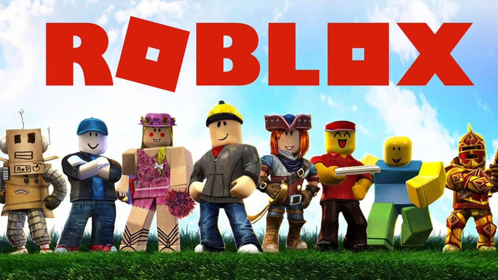

roblox
Roblox je online platforma i sistem za kreiranje igara koji korisnicima omogućava da igraju igre koje su napravili drugi korisnici, kao i da sami prave svoje igre koristeći Roblox Studio, alat zasnovan na programskom jeziku Lua. Pokrenut 2006. godine, Roblox je stekao ogromnu popularnost, naročito među mlađom publikom, jer omogućava jednostavno istraživanje, igranje i kreaciju raznih svetova i žanrova – od simulacija i avantura do borbenih i edukativnih igara. Iako je besplatan za korišćenje, mnoge funkcije i predmeti u igri mogu se kupiti korišćenjem virtuelne valute zvane Robux.